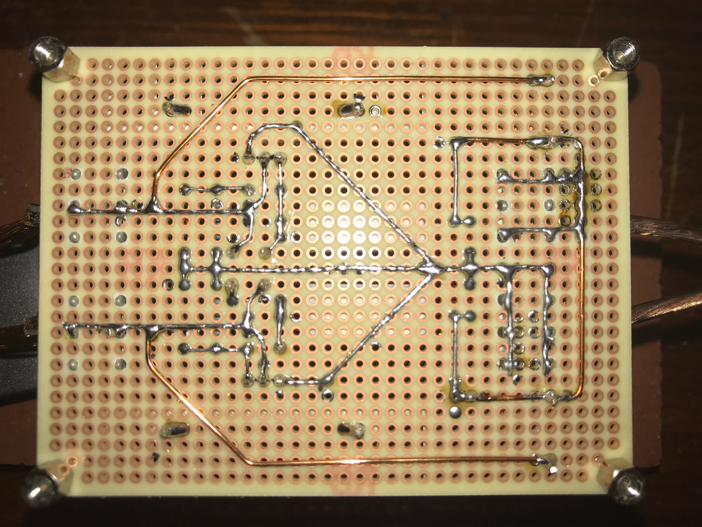

LC共振でプラズマボール
2020/11/19
LC共振回路でプラズマボールを作成してみたので、ざっとその解説をします
LC共振回路とは？
簡単に言うと・・・C:コンデンサと L:コイルを輪っか状につなぐと電流が行ったり来たりをずっと繰り返す回路
コンデンサとコイルは電力を消費しないため電力が保存される。コンデンサには電圧(電界)、コイルには 電流(磁界)として保存される。この時、コンデンサとコイルはエネルギーを交互にやり取りし、電圧と電流 が周期的に変化する。その周期に合わせてエネルギーを与えてやるとそのエネルギーが蓄えられていき、大 きな電圧、電流が発生する。その周波数は以下の式で表される。
回路とシミュレーション
LC 並列共振回路の共振周波数に合わせて発振する回路を用いて 直流の 12 V を交流の 50~100 V に昇圧し、それをトランスで 4~8 kV に昇圧する
制作物
制作した回路

裏の配線
LC 共振回路と昇圧トランス(4:320)
完成
一次コイル印加電圧 75V トランス変圧比 80 予想出力電圧 6kV 周波数 33kHz

まとめ
LC 共振を用いてプラズマボールを作ることができた。条件によってはプラズマが発 生しないこともあったので詳しい条件を探っていきたい。